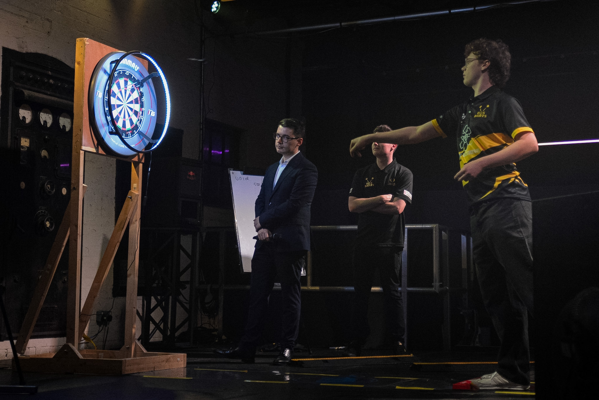
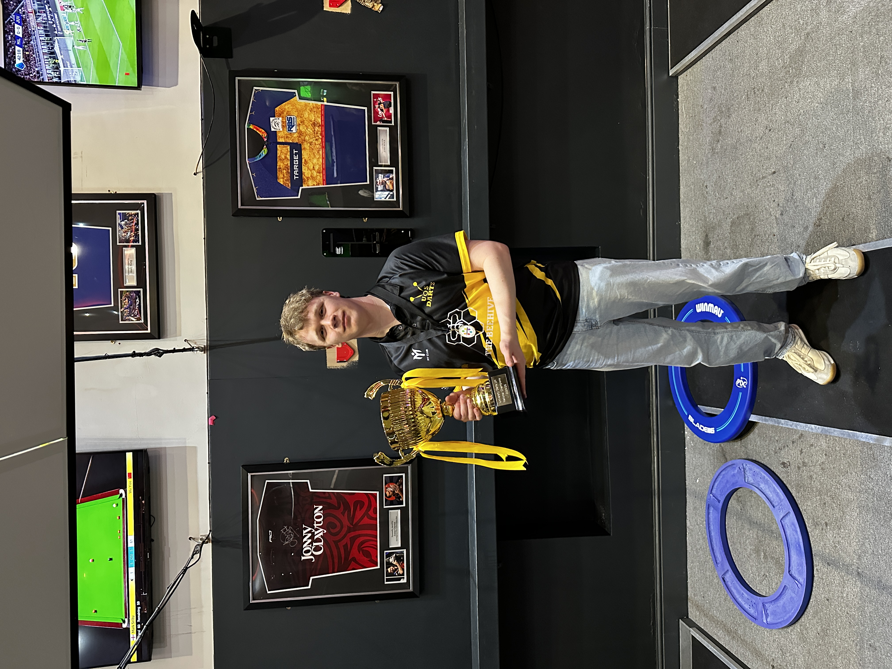

About Me
I'm a First-Class MPhys Physics and Astrophysics graduate from the University of Sheffield, with a strong interest in mathematics, programming and problem-solving.
Throughout my degree, I particularly enjoyed applying computational methods to scientific problems. My Master's research project involved analysing approximately 450 O-type stars in the Small Magellanic Cloud, using Python to combine astronomical datasets, model uncertainties and investigate the properties of the stellar population.
My academic experiences helped me realise how much I enjoy working with data, developing analytical methods and finding meaningful insights in complex information. Since graduating, I'm continuing to develop my programming and analytical skills through independent projects, exploring applications beyond astrophysics.
I'm now looking to begin my career in data analytics, data science or a related technical field. I'm particularly motivated by opportunities to solve interesting problems, learn new skills and contribute to meaningful work.
I'm always happy to connect, whether it's to discuss potential opportunities, collaborate on a project or simply have a chat about something interesting or technical.
Education & Qualifications
University of Sheffield
MPhys Physics and Astrophysics
First-Class Honours | 2026
My degree provided a strong foundation in mathematics, physics, computational techniques and scientific research, including extensive experience in quantitative analysis and communicating technical findings.
A-Levels
Mathematics (A*), Physics (A), Chemistry (A), Further Mathematics (A), EPQ (B)

Personal Life & Interests
Darts & University Involvement
One of my biggest interests outside academia is darts. During university, I was an active member of the University of Sheffield Darts Society and served as Vice-President during the 2025/26 academic year.
I represented Sheffield in university competitions, including being part of the team that won the 2026 National University Darts Championship. I also competed on stage at Varsity in front of an audience of almost 1000, an experience that required confidence and composure under pressure.
My involvement in university darts gave me opportunities to develop leadership, teamwork and communication skills, while meeting people and building friendships outside my course.


Other Interests
I'm also a Grade 7 drummer and have enjoyed playing music for many years. Outside of darts and music, I'm a keen football fan and enjoy keeping active, travelling and exploring new interests.
Technical Skills
Programming & Data Analysis
Statistical & Numerical Methods
Currently Developing
I'm continuing to expand my technical abilities through independent projects, with a particular focus on SQL, predictive modelling and practical applications of data analysis.